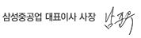

CEO인사말
안녕하십니까?
삼성중공업 대표이사 남준우 입니다.
홈페이지를 통해 이렇게 만나게 되어 무척 반갑습니다.
삼성중공업은 1974년 창립 이래 뛰어난 기술력과 우수한 품질을 바탕으로 고객만족을 실현해온 세계 최고의 조선해양설비 회사입니다.
저희는 임직원 한 사람 한 사람이 최고가 되겠다는 일념으로 똘똘 뭉쳐 앞서가는 기술 혁신과 획기적인 공법 개선을 통해 세계 조선해양 산업의 대표 기업으로 발돋움했습니다.
세계 최초의 쇄빙유조선과 초대형 에탄운반선, 전세계 시장점유율 1위를 달리고 있는 셔틀탱커와 드릴십, 세계 최대규모를 자랑하는 초대형 컨테이너선과 LNG-FPSO 등 삼성중공업 임직원들의 열정이 만들어낸 1천여 척의 선박과 해양플랜트는 전 세계 바다를 누비며 그 위용을 떨치고 있습니다.
그 동안 힘든 고비가 있었지만, 조선해양 산업의 전망은 점차 밝아지고 있습니다. 이에 삼성중공업은 First Mover가 되어 조선해양 산업의 미래를 더욱 환하게 만들어 나갈 것입니다.
특히 삼성중공업은 불황기에도 꾸준히 해양플랜트를 수주하며 독보적인 경쟁력을 갖춰왔습니다.
앞으로도 우수한 인력과 프로젝트 수행 능력을 바탕으로 해양시장의 강자로서 그 입지를 공고히 하겠습니다.
아울러, 4차 산업 시대에 걸맞게 ICT를 업무 전반에 적용하는 한편, 자율운항선을 포함한 신개념 선박 및 신연료 추진 선박 등의 개발에 매진하여 조선해양 산업의 미래와 최첨단화를 선도하겠습니다.
저희 삼성중공업에 많은 성원을 보내주셔서 진심으로 감사 드리며, 홈페이지에서 정확하고 다양한 회사 정보를 제공해 드리도록 노력하겠습니다.
항상 건강하시고 행복하십시오.
감사합니다.
